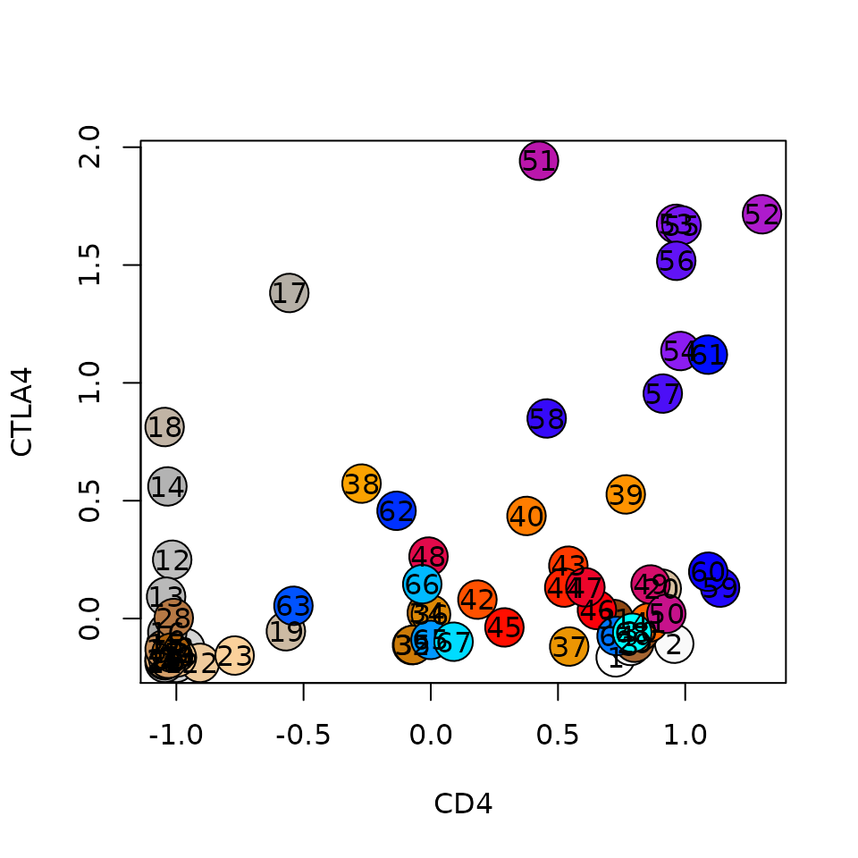
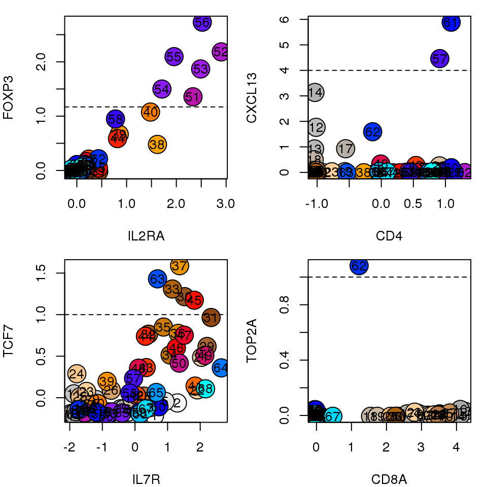
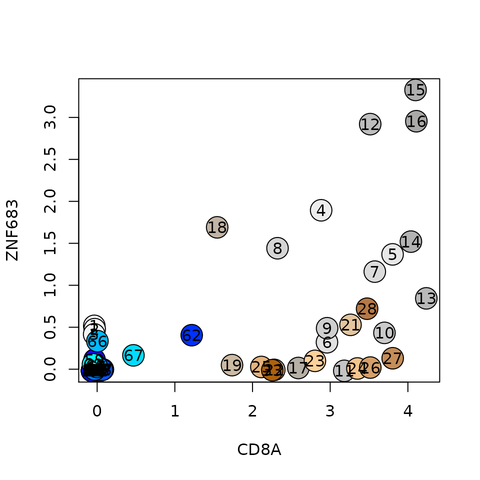
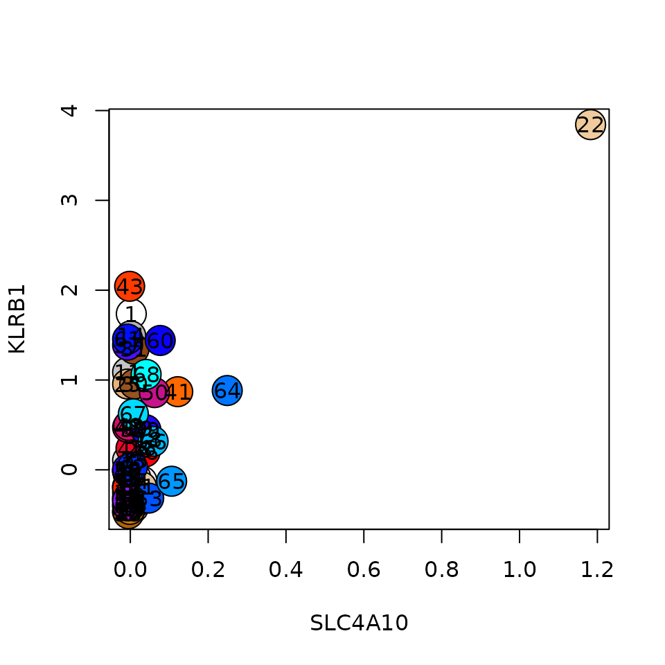

vignettes/c-metacell_annotation.Rmd
c-metacell_annotation.RmdThis vignette demonstrates several ways to annotate metacells. It uses the genes relative enrichment of the metacells and the cross-metacell similarity matrix (confusion matrix) to identify metacells of a certain cell-type or cell state. The dataset used in this vignette is single-cell RNA-seq of T cells from lung cancer patients, from the Guo et al, Nat Med. 2018 paper.
Annotation of metacells is done by assigning a color to each metacell in the @colors vector in the metacell object. Information on the colors is stored in the @color_key data frame. It contains the columns ‘group’ (name of the type/state assigned to the metacell) and ‘color’, and might contain additional columns, depending on the method used to annotate the metacells, as will be shown below.
The metacells partitioning we use here was generated from the transcript per million reads (TPM) input table Guo et al. supply. For more details see the guo2018.r script at Li_et_al_Cell_2018_Melanoma_scRNA code repository. We’ll first download the input objects, specifically the unannotated metacell object. #{r, eval=TRUE, warning=FALSE} #download.file("http://www.wisdom.weizmann.ac.il/~lubling/metac_data/metacell_annotation/lung_db.tar.gz", destfile = #"lung_db.tar.gz") #system("tar xfz lung_db.tar.gz") #file.remove("lung_db.tar.gz") #
dir.create("lung_db", showWarnings = F)
for (f in c("cgraph.guo2018_tpm_scaled_filt_Tumor_Normal_Blood.Rda",
"coclust.guo2018_tpm_scaled_filt_Tumor_Normal_Blood.Rda",
"gset.guo2018_lateral.Rda",
"gstat.guo2018_tpm_scaled_filt_Tumor_Normal_Blood.Rda",
"lfp_screenshot.png",
"mat.guo2018_tpm_scaled_filt_guo2018_lateral.Rda",
"mat.guo2018_tpm_scaled_filt_Tumor_Normal_Blood.Rda",
"mc.guo2018_tpm_scaled_filt_Tumor_Normal_Blood_outClean_nonAnn.Rda")) {
download.file(paste0("http://www.wisdom.weizmann.ac.il/~lubling/metac_data/metacell_annotation/", f), destfile=paste0("lung_db/", f))
}Now let’s load the metacell package and define the output directories:
library(metacell)
library(dplyr)
#>
#> Attaching package: 'dplyr'
#> The following objects are masked from 'package:stats':
#>
#> filter, lag
#> The following objects are masked from 'package:base':
#>
#> intersect, setdiff, setequal, union
scdb_init("lung_db", force_reinit=T)
#> initializing scdb to lung_db
dir.create("lung_figs", showWarnings = F)
scfigs_init("lung_figs")For the sake of code clarity, lets define variables for the main metacell object IDs we’ll soon use:
mc_non_ann_id = "guo2018_tpm_scaled_filt_Tumor_Normal_Blood_outClean_nonAnn"
mc_id = "guo2018_tpm_scaled_filt_Tumor_Normal_Blood_outClean"
graph_id = "guo2018_tpm_scaled_filt_Tumor_Normal_Blood"
mat_id = graph_id
lateral_gset_id = "guo2018_lateral"It is often useful to start with semi-random coloring of metacells by assignment of sequentail colors to metacells. Since metacells are ordered by default, similar metacells will tend to have similar colors by this process. We’ll first make a copy of the non-annotated input metacell object, in order not to overwrite it (we’ll need it later on). Coloring is done by mc_colorize default function. The user can override the default color specturm used by supplying her own color spectrum (typically the output of colorRampPalette) to the spectrum parameter.
The function assigned colors in the @colors slot, yet the @color_key data frame is empty, since these colors are arbitrary and are not associated with any annotation.
mc_non_ann = scdb_mc(mc_non_ann_id)
scdb_add_mc(mc_id, mc_non_ann)
mc_colorize_default(mc_id)
mc = scdb_mc(mc_id)
print(mc@colors)
#> [1] "#FFFFFF" "#F9F9F9" "#F3F3F3" "#EDEDED" "#E7E7E7" "#E1E1E1" "#DBDBDB"
#> [8] "#D5D5D5" "#CFCFCF" "#CACACA" "#C4C4C4" "#BEBEBE" "#B9B9B9" "#B3B3B3"
#> [15] "#AEAEAE" "#AAA9A8" "#B5AFA6" "#C1B4A5" "#CCBAA3" "#D8C0A1" "#E4C59F"
#> [22] "#EFCB9D" "#FBD19B" "#F4C68E" "#E5B37C" "#D5A06A" "#C58D58" "#B67945"
#> [29] "#A66633" "#975321" "#8E4712" "#9E540F" "#AD610D" "#BD6E0A" "#CC7B08"
#> [36] "#DC8805" "#EB9503" "#FBA200" "#FF9300" "#FF7D00" "#FF6700" "#FF5100"
#> [43] "#FF3B00" "#FF2400" "#FF0E00" "#FA010A" "#ED052A" "#E10A4B" "#D40E6B"
#> [50] "#C7128B" "#BA16AB" "#AE1BCC" "#A11FEC" "#8C1CF1" "#7717F3" "#6113F5"
#> [57] "#4C0FF7" "#360AF9" "#2106FB" "#0B02FD" "#000FFF" "#0031FF" "#0053FF"
#> [64] "#0075FF" "#0098FF" "#00BAFF" "#00DCFF" "#00FFFF"
print(mc@color_key)
#> data frame with 0 columns and 0 rowsA concevenient way to explore the metacells is to generate a heatmap of gene enrichments on single cells or metacells. The input data is the genes relative footprint values across metacells over the median metacell footprint (the table under the @mc_fp slot). We’ll usually use the log2 value of these ratios, and will term the matrix of log ratios lfp in this vignette.
We’ll first select which genes to present with mcell_gset_from_mc_markers. Its basic usage expects an input metacell id (mc_id) and the name of the gene set to store the genes in (gset_id). This function screens for highly varying genes (max absolute lfp value above the config parameter scm_mc_mark_min_gene_fold, 1.5 by default) and selects the top N varying genes per metacell (N is defined in the scm_mc_mark_k_per_clust parameter, 5 by default). The union of the genes selected per metacell defines the output gene set.
mcell_gset_from_mc_markers(gset_id = mc_id, mc_id = mc_id)Now we’ll generate the heatmap, supplying the metacell id and the gene set id of the genes to show, and since we plot the cells (and not the metacells), also the mat id (from which the raw UMI counts are taken). The main configuration parameters that control the heatmap are mcp_heatmap_height and mcp_heatmap_width (figure height and width in pixels), mcp_heatmap_text_cex (text size, passed as cex param to text function) and mcp_heatmap_alt_side_text (logical, if true, plot odd gene names to the right and even to the left of the heatmap).
mcell_mc_plot_marks(mc_id = mc_id, gset_id = mc_id, mat_id = mat_id, plot_cells=T)Varying genes footprint on single-cells, ordered by metacells
Lateral genes are enriched in several metacells regardless of the cell type or state. The obious example for such lateral gene program is cell cycle related genes. We often filter lateral genes from being features that affect the creation of metacells. When plotting gene-metacell heatmap, we can filter lateral genes from the displayed genes by supplying the lateral gene set id to the blacklist_gset_id parameter in mcell_gset_from_mc_markers. However, we might still want to see the expression of these genes across metacells in the heatmap, yet without letting them affect the ordering of metacells in the heatmap. To do so we generate 2 gene sets - both of highly variable genes across metacells, the first without and the second with only lateral genes. The first will be supplied to the gset_id param in mcell_mc_plot_marks and the second to the lateral_gset_id param. In this data, the lateral gene set contains cell cycle, IFNa response and stress related genes. The lateral genes are marked in red and are shown on at the top of the heatmap.
# prevent the lateral genes from being in the gene set
mcell_gset_from_mc_markers(gset_id = mc_id, mc_id = mc_id, blacklist_gset_id = lateral_gset_id)
# select variable genes from the lateral gene set
mcell_gset_from_mc_markers(gset_id = paste0(mc_id, "_lateral"), mc_id = mc_id, filt_gset_id = lateral_gset_id)
mcell_mc_plot_marks(mc_id = mc_id, gset_id = mc_id, mat_id = mat_id, fig_fn = scfigs_fn(mc_id, "cells_heat_marks_lat"), lateral_gset_id = paste0(mc_id, "_lateral"), plot_cells=T)Varying genes footrprint on single-cells, ordered by metacells, lateral genes on top in red
Another quick and popular way to get a feeling on metacell similarity (and grouping) is to generate a 2D projection of cells and metacells, where the coordinates of each metacell and the edges between metacells are dictated by inter-metacell similarity. mcell_mc2d_force_knn builds the metacell 2D projection (mc2d object) and mcell_mc2d_plot generates the plot. The relevant configuration parameters affecting the plot are mcell_mc2d_height and mcell_mc2d_width (dimension in pixels), mcell_mc2d_plot_key (logical, whether to show the legend), mcell_mc2d_cex and mcell_mc2d_legend_cex (cells and legend size).
mcell_mc2d_force_knn(mc2d_id = mc_id, mc_id = mc_id, graph_id = graph_id)
#> comp mc graph using the graph guo2018_tpm_scaled_filt_Tumor_Normal_Blood and K 20
mcell_mc2d_plot(mc2d_id = mc_id, plot_edges = TRUE)
#> png
#> 2#> [1] TRUESingle-cell and metacells 2D projection
As discussed above, the central way to characterize metacells is via the metacell gene enrichment table (termed here lfp, values in log2 ratio over median gene expression across metacells). We can generate a heatmap of the lfp, marking lateral genes in red and disabling them from affecting the metacells order (columns) as we did before when plotting a heatmap of genes and single-cells:
mcell_mc_plot_marks(mc_id = mc_id, gset_id = mc_id, mat_id = mat_id, fig_fn = scfigs_fn(mc_id, "mc_heat_marks_lat"), lateral_gset_id = paste0(mc_id, "_lateral"), plot_cells=F)Varying genes footrprint on metacells, ordered by metecalls, blacklisted genes on top in red
It is also useful to do scatter plots for specific genes. In the example below, we’re interested if the data contain Treg cells, so we plot CTLA4 vs CD4, and indeed there is a group of metacells enriched in both genes.
lfp = log2(mc@mc_fp)
plt = function(gene1, gene2, lfp, colors)
{
plot(lfp[gene1, ], lfp[gene2, ], pch=21, cex=3, bg=colors, xlab=gene1, ylab=gene2)
text(lfp[gene1, ], lfp[gene2, ], colnames(lfp))
}
plt(gene1 = 'CD4', gene2 = 'CTLA4', lfp = lfp, colors = mc@colors)
It is also useful to browse the lfp table itself. mcell_mc_export_tab exports the lfp table to a tab-delimited file. It filters genes with maximal lfp value above the T_fold parameter. The function reports the metacell size (n_cells) and mean UMIs per metacell (mean_umis), which is a proxy for the cell size. The group field contains the annotation of the metacell (this will be informative after the metacell coloring functions we’ll present below). The metadata field names (columns in the mat object @cell_metadata table) can be supplied to the metadata_fields parameter. The function would then breakdown cells in each metacell on the values of the metadata field. Very useful to characterize the metacells if our data has informative metadata features.
mcell_mc_export_tab(mc_id = mc_id, gstat_id = mat_id, mat_id = mat_id, T_fold=2, metadata_fields=c('Patient', 'CD8_gate', 'Sex', 'Stage', 'Histology'))
lfp_tab = read.table(scfigs_fn(mc_id, "log2_mc_fp", ext = "txt"), header=F, sep="\t", stringsAsFactors = F)
knitr::kable(lfp_tab[1:40, 1:6])| V1 | V2 | V3 | V4 | V5 | V6 |
|---|---|---|---|---|---|
| Histology | adenocarcinoma | 160.00 | 217.00 | 135.00 | 201.00 |
| Histology | squamous cell carcinoma | 7.00 | 27.00 | 2.00 | 5.00 |
| Stage | I | 137.00 | 193.00 | 37.00 | 14.00 |
| Stage | III | 27.00 | 48.00 | 99.00 | 192.00 |
| Stage | IV | 3.00 | 3.00 | 1.00 | 0.00 |
| Sex | F | 139.00 | 192.00 | 39.00 | 188.00 |
| Sex | M | 28.00 | 52.00 | 98.00 | 18.00 |
| CD8_gate | - | 166.00 | 243.00 | 129.00 | 1.00 |
| CD8_gate | + | 1.00 | 1.00 | 8.00 | 205.00 |
| Patient | P0616A | 13.00 | 10.00 | 15.00 | 0.00 |
| Patient | P0616P | 0.00 | 0.00 | 0.00 | 2.00 |
| Patient | P0617 | 21.00 | 21.00 | 91.00 | 7.00 |
| Patient | P0619 | 2.00 | 4.00 | 6.00 | 3.00 |
| Patient | P0706 | 0.00 | 1.00 | 0.00 | 0.00 |
| Patient | P0729 | 0.00 | 0.00 | 1.00 | 177.00 |
| Patient | P0913 | 4.00 | 23.00 | 1.00 | 5.00 |
| Patient | P1010 | 6.00 | 161.00 | 4.00 | 1.00 |
| Patient | P1011 | 3.00 | 3.00 | 1.00 | 0.00 |
| Patient | P1118 | 9.00 | 9.00 | 0.00 | 3.00 |
| Patient | P1120 | 1.00 | 3.00 | 0.00 | 1.00 |
| Patient | P1202 | 108.00 | 9.00 | 0.00 | 1.00 |
| Patient | P1208 | 0.00 | 0.00 | 0.00 | 6.00 |
| Patient | P1219 | 0.00 | 0.00 | 18.00 | 0.00 |
| mean_umis | 19930.12 | 19913.84 | 19939.01 | 19951.63 | |
| n_cells | 167.00 | 244.00 | 137.00 | 206.00 | |
| group | NA | NA | NA | NA | |
| mc_id | 1.00 | 2.00 | 3.00 | 4.00 | |
| TANK | -0.15 | -0.12 | -0.20 | 0.10 | |
| LINC00892 | 0.50 | 0.47 | 0.36 | 0.19 | |
| OST4 | -0.56 | 0.26 | 0.25 | 0.30 | |
| LINC00861 | 0.05 | 0.28 | 0.45 | -0.32 | |
| MIR1292 | 0.28 | 0.10 | -0.03 | -0.40 | |
| MIR1282 | -0.81 | 0.16 | 0.13 | 0.19 | |
| PCNA-AS1 | 0.02 | 0.10 | -0.22 | -0.02 | |
| ZEB2-AS1 | 0.91 | 0.70 | 1.00 | 0.05 | |
| MIR1244-2 | -0.13 | -0.26 | -0.70 | 0.07 | |
| MIR3917 | 0.18 | 0.14 | 0.07 | 0.00 | |
| MIR3656 | 0.21 | 0.07 | -0.20 | -0.01 | |
| MIR3652 | 0.34 | 0.32 | -0.34 | -0.39 | |
| MIR3615 | 1.19 | 0.83 | 1.14 | -0.83 |
Example of formatted lfp table
In many cases we’ll have some prior knowledge on the cell types we expect to be represented by the metacells. Scatter plots of lfp values of selected genes can highlight these metacells. For instance, the plots below show metacells enriched in IL2RA and FOXP3, which are probably Tregs, CD4+ metacells that strongly express CXCL13, which probably represent Tfh cells, a single proliferating metacell enriched with TOP2A, and naive T cells, expressiong IL7R and TCF7. We can set a threshold on the lfp value of these genes (marked with dashed line) to assign an annotation to these metacells:
genes1 = c('IL2RA', 'CD4', 'IL7R', 'CD8A')
genes2 = c('FOXP3', 'CXCL13', 'TCF7', 'TOP2A')
cutoffs = log2(c(2.25, 16, 2, 2))
par(mfrow=c(2,2))
par(mar=c(4,4,1,1))
for (i in seq_along(genes1)) {
plt(gene1 = genes1[i], gene2 = genes2[i], lfp = lfp, colors = mc@colors)
abline(h=cutoffs[i], lty=2)
}
We define the annotations with their thresholds on genes in a tab-delimited file:
marks_colors = read.table(system.file("extdata", "guo2018_mc_partial_colorize.txt", package = "metacell"), sep="\t", h=T, stringsAsFactors=F)
knitr::kable(marks_colors)| group | gene | color | priority | T_fold |
|---|---|---|---|---|
| Treg | FOXP3 | magenta | 1 | 2.25 |
| Tfh | CXCL13 | darkolivegreen | 1 | 16.00 |
| Naive | TCF7 | navajowhite2 | 1 | 2.00 |
| Prolif | TOP2A | lightblue | 1 | 2.00 |
The annotation name and its color are filled in the group and color columns. Threshold on each gene are in the T_fold column. Note that these are applied on the @mc_fp table, so should be fold change and not log2 fold-change. Each annotation can have several genes to define it, each with its own threshold. A metacell can match several rules, so the assigment might be ambigious. The priority value aims to address this. In the default mode, the lfp value of all genes passing their T_fold thresholds is multiplied by the gene priority and the gene with the maximal outcome is selected. If working in sequential coloring mode (setting configuration parameter mcp_colorize_by_seq_priority to be TRUE), genes are grouped by priority, and metacells are assigned to groups iteratively, starting with the genes in the first (smallest) priority, and only assigning groups to unassigned metacells in each iteration.
We use mc_colorize to annotate the metacelks with our gene rules, and plot the 2D projection to appreciate the result. Note that the @color_key table contains annotations, the plot has a legend. You can control its position with the legend_pos parameter (and control whether to show the legend at all with the logical configuration parameter mcell_mc2d_plot_key):
mc_colorize(new_mc_id = mc_id, mc_id = mc_non_ann_id, marker_colors=marks_colors)
mcell_mc2d_plot(mc2d_id = mc_id)
#> png
#> 2#> [1] TRUESingle-cell and metacells 2D projection
A more comprehensive and systematic approach to annotate metacells uses the metacells ‘confusion matrix’, a metacell pairwise similarity matrix, summarizing the K-nn graph connectivity between all cells in each pair of metacells. We start by hierarchically clustering the metacells (columns) of the confusion matrix:
mc_hc = mcell_mc_hclust_confu(mc_id = mc_id, graph_id = graph_id)Next, we generate clusters of metacells (super-metacells, or sup_mc for convenience) based on this hierarchy with mcell_mc_hierarchy. These clusters are nodes in the hierarchical tree of metacells that their branch length is longer then T_gap. We visualize the confusion matrix and these clusters with mcell_mc_plot_hierarchy. Only sup_mcs with more than min_nmc metacells in them are plotted. The confusion matrix is shown at the bottom, and the top panel encodes the cluster hierarchy by showing the subtree of each sup_mc in blue, and the sibling subtree in gray.
mc_sup = mcell_mc_hierarchy(mc_id = mc_id, mc_hc = mc_hc, T_gap = 0.04)
mcell_mc_plot_hierarchy(mc_id = mc_id, graph_id = graph_id,
mc_order = mc_hc$order,
sup_mc = mc_sup,
width = 1200, height = 2400,
min_nmc=2, show_mc_ids = T)
#> png
#> 2#> [1] TRUEClustered metacells confusion matrix
There are several lists of enriched genes for each subtree. Let’s examine all the information supplied on a subree. For instance, subtree number 4 (which is clearly comprised of Treg metacells):
print(mc_sup[[4]])
#> $marks
#> GAPDH CD27-AS1 CXCR6 CARD16 SELL CTLA4 TNFRSF1B ICOS
#> 1.409033 1.425825 1.478982 1.527237 1.571408 1.609004 1.647381 1.729588
#> TNFRSF4 FOXP3 RGS1 TIGIT CCR8 PIM2 SAT1 CD27
#> 1.908381 1.955422 2.052494 2.065926 2.076183 2.108668 2.131010 2.170227
#> TNFRSF18 MIR4632 IL2RA BATF
#> 2.185034 2.188458 2.318691 2.542111
#>
#> $min_marks
#> CXCR6 SELL CD82 RGS1 SIRPG ICOS IL32
#> 0.7418518 0.7487228 0.7501615 0.9337986 1.0267765 1.0475643 1.0644945
#> CARD16 CTLA4 CD74 CCR8 GAPDH CD27-AS1 FOXP3
#> 1.0738282 1.1351219 1.1766789 1.1937338 1.2025314 1.3105893 1.3563242
#> TIGIT SAT1 IL2RA PIM2 CD27 BATF
#> 1.5938838 1.6433828 1.7104313 1.7890192 2.0234116 2.1977205
#>
#> $marks_gap
#> PKM IFI6 IL1R2 ENO1 LDHA SRGN SAT1 TNFRSF1B
#> 1.173707 1.179759 1.208043 1.212875 1.219272 1.235725 1.239677 1.257179
#> APOBEC3C GAPDH ICOS CTSC MIR4632 DDIT4 TNFRSF4 CCR8
#> 1.298520 1.340427 1.342362 1.389729 1.482165 1.484738 1.512940 1.667040
#> CXCR6 RGS1 TNFRSF18 BATF
#> 1.860873 1.901821 1.971574 2.075978
#>
#> $marks_gap_anti
#> GIMAP7 GIMAP4 TXNIP CD52 S100A10
#> -2.1707354 -1.6104371 -1.5863388 -1.4286298 -1.1785400
#> FCMR GIMAP1-GIMAP5 SELL LIME1 ALOX5AP
#> -1.1444732 -1.1084550 -1.0938374 -1.0360991 -0.9999712
#> AES LDHB GSTK1 RPL13A CCR7
#> -0.9894325 -0.9848750 -0.9780960 -0.9670300 -0.9525264
#> GIMAP5 RPS6 UBXN11 RARRES3 LEF1
#> -0.9523882 -0.9315339 -0.8861049 -0.8690605 -0.8554596
#>
#> $mcs
#> [1] 55 53 52 51 54 56
#>
#> $x_ord
#> [1] 6.5
#>
#> $sup_mcs
#> [1] 40 38 39 58 55 53 52 51 54 56Top 5 marks genes are shown in the plot to the left of the sup_mc row, top 5 marks_gap are shown to the right, followed (after a ‘pipe’ sign) by the top 5 marks_gap_anti genes.
The annotation task based on this sup_mcs becomes the task of tagging sup-mcs, by browsing the figure and the more detailed sup_mc object, such that all metacells are covered by a tagged sup_mc. Annotation can also flow from bottom up, for instance, if we’re insterseted in annotating CD8+ ZNF683+ enriched metacells: let’s first see the lfp enrichment of both genes:
plt(gene1 = 'CD8A', gene2 = 'ZNF683', lfp = lfp, colors = mc@colors)
We see that there are 3 metacells with ZNF683 lfp values above 2.5, but where are these metacells within the sup_mc tree? We define here a simple helper function named query_sup_by_mcs, that gets a list of metacells and reports the sup_mcs that contain them (the id of the sup_mc, number of queried metacells, number of queried metacells inside the sup_mc and the sup_mc size). We usually aim to find the minimal sup_mc that contains most of the metacells we’re interested in, in this case, sup_mc 42 seems like a reasonable choice:
query_sup_by_mcs = function(sup, mcs)
{
do.call('rbind', lapply(1:length(sup), function(i) { csup = sup[[i]]; data.frame(id=i, n_mcs=length(mcs), n_in=length(intersect(mcs, csup$mcs)), sup_size=length(csup$mcs)) })) %>% filter(n_in > 0) %>% arrange(sup_size)
}
query_sup_by_mcs(mc_sup, which(lfp['ZNF683', ] > 2.5))
#> id n_mcs n_in sup_size
#> 1 43 3 2 4
#> 2 42 3 3 5
#> 3 40 3 3 7
#> 4 46 3 3 19
#> 5 44 3 3 28
#> 6 41 3 3 30
print(mc_sup[[42]])
#> $marks
#> CAPG COTL1 APOBEC3C PRF1 ITGAE ALOX5AP
#> 1.741976 1.760421 1.774480 1.929533 2.148585 2.170378
#> ID2 ZNF683 CD8B CXCR6 CTSW GZMA
#> 2.242233 2.313298 2.344979 2.444342 2.776128 2.842893
#> CCL5 KLRC4-KLRK1 CCL4 GZMH KLRK1 CD8A
#> 3.392455 3.481389 3.586614 3.655135 3.779911 3.999646
#> NKG7 GZMB
#> 4.393001 4.595379
#>
#> $min_marks
#> ITGAE CTSD APOBEC3C APOBEC3G GPR171 ID2
#> 1.012721 1.021769 1.029850 1.127767 1.148459 1.183031
#> COTL1 PRF1 CCL4 GZMA CTSW CXCR6
#> 1.206467 1.368101 1.731148 1.834879 1.891544 2.115394
#> CD8B CCL5 KLRC4-KLRK1 GZMH GZMB KLRK1
#> 2.122480 2.879629 3.070701 3.145283 3.369617 3.434703
#> CD8A NKG7
#> 3.514828 3.649621
#>
#> $marks_gap
#> UCP2 SIRPG ITM2A HLA-DRB1 IDH2 CXCL13 DDIT4 LCK
#> 1.158478 1.168008 1.174318 1.197966 1.199905 1.203829 1.231473 1.268832
#> ARPC1B GZMB CD74 CORO1A APOBEC3C COTL1 HLA-DRB6 ITGAE
#> 1.271518 1.277664 1.306401 1.334704 1.435025 1.450852 1.586647 1.645951
#> CXCR6 GZMA HLA-DRB5 GZMH
#> 1.681105 1.740864 1.799916 1.830240
#>
#> $marks_gap_anti
#> IL7R RPLP2 S100A10 LGALS1 GPR183 S100A4
#> -1.6705130 -1.4081441 -1.3791475 -1.2715754 -1.1557306 -1.0069529
#> RPS12 ANXA1 RPS14 S100A11 RPL35 GNLY
#> -1.0064458 -0.9702105 -0.9231261 -0.9154989 -0.9065101 -0.9012424
#> RPL36 TMSB10 RPL30 RPS16 RPS29 RPS10
#> -0.8934304 -0.8931744 -0.8871693 -0.8416471 -0.8384013 -0.8373846
#> RPL27 RPL32
#> -0.8348400 -0.8348025
#>
#> $mcs
#> [1] 16 13 14 12 15
#>
#> $x_ord
#> [1] 54
#>
#> $sup_mcs
#> [1] 16 13 14 12 15 5 4The list of annotated sup_mcs should be in a tab-delimited table containing the id of the sup_mc, its name and color, as shown below. Note that the order of entries matters - the annotation function process this table sequentially, so the newest entry overrides previous ones (if a metacell below to several sup_mcs in the table). It is actually useful in some cases, where you first define a large group of metacells and then pick from within it a smaller group and re-annotate it.
supmc_tab = read.table(system.file("extdata", "guo2018_supmc.txt", package = "metacell"), sep="\t", h=T, stringsAsFactors=F)
knitr::kable(supmc_tab)| supid | color | name |
|---|---|---|
| 2 | #107538 | Tfh |
| 4 | #59b56f | tumor-Treg |
| 8 | #a3ffb9 | blood-Treg |
| 17 | #b3d4f0 | naive-TCF7 |
| 27 | #6d8eaa | naive-CXCR6 |
| 34 | #cee6b9 | CD4-cyto |
| 37 | #fdb913 | CD8-cyto |
| 40 | #a76eaf | CD8-dysf |
| 51 | #d29bc6 | CD8-GZMK |
Sometimes the sup_mcs will not cover all the metacells. Usually this is the case if we have rare cell types represented by a single metacell. For instance Mucosal associated invariant T cell (MAIT) cells in our data here:
plt(gene1 = 'SLC4A10', gene2 = 'KLRB1', lfp = lfp, colors = mc@colors) We can annotate these metacells by defining thresholds on genes. Note that the T_fold threshold in this case is compared to the log2 lfp value. Processing of this table is also sequetial, so if a metacell matches several rules, the last one overwrites any of the previous rules, and coloring by this table will also override any coloring done based on the sup_mcs table.
knitr::kable(read.table(system.file("extdata", "guo2018_marks.txt", package = "metacell"), sep="\t", h=T, stringsAsFactors=F))| name | gene | color | T_fold |
|---|---|---|---|
| CD8-dysf | TUBA1B | #a76eaf | 2 |
| CD8-MAIT | SLC4A10 | #ead37a | 1 |
| CD8-dysf-KLRC4 | KLRC4 | #6b3273 | 3 |
| naive-TCF7 | XIST | #b3d4f0 | 1 |
Once both these tables are defined, we can colorize (e.g. annotate) metacells with them using the mc_colorize_sup_hierarchy function:
mc_colorize_sup_hierarchy(mc_id = mc_id,
supmc = mc_sup,
supmc_key = system.file("extdata", "guo2018_supmc.txt", package = "metacell"),
gene_key= system.file("extdata", "guo2018_marks.txt", package = "metacell"))
# generate metacell clusters heatmap
mcell_mc_plot_hierarchy(mc_id = mc_id,
graph_id = graph_id,
mc_order = mc_hc$order,
sup_mc = mc_sup,
width=1200, height=2400, min_nmc=2, show_mc_ids= T)
#> png
#> 2#> [1] TRUEClustered metacells confusion matrix
And the updated 2D projection would look like this:
#> png
#> 2#> [1] TRUESingle-cell and metacells 2D projection